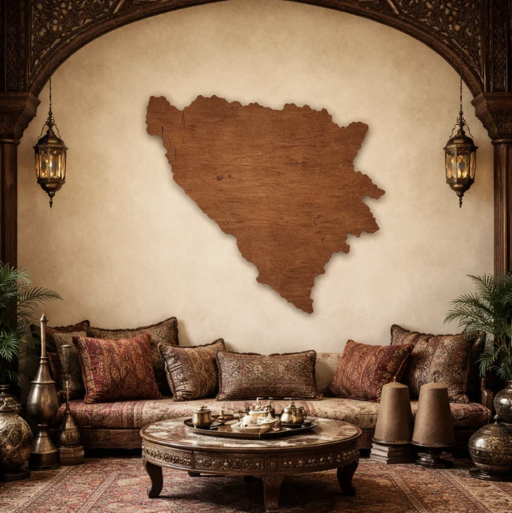

</section>

<!-- Back to Top Button -->
<button id="backToTop" aria-label="Back to top" title="Back to top">↑</button>
</body>
</html>
<script>
// Back to Top Button Logic
const backToTop = document.getElementById('backToTop');
window.addEventListener('scroll', function() {
  if (window.scrollY > 300) {
    backToTop.style.display = 'block';
  } else {
    backToTop.style.display = 'none';
  }
});
backToTop.onclick = function() {
  window.scrollTo({ top: 0, behavior: 'smooth' });
};
</script>
<!DOCTYPE html>
<html lang="en">
<head>
    <meta charset="UTF-8">
    <title>Ahmed Huseinspahić</title>

    <!-- Font -->
    <link href="https://fonts.googleapis.com/css2?family=Roboto:wght@400;700&display=swap" rel="stylesheet">
    <link href="https://fonts.googleapis.com/css2?family=Roboto+Slab:wght@400;700&display=swap" rel="stylesheet">

    <!-- Styles -->
    <link rel="stylesheet" href="Style.css">
</head>
<body>
  <!-- Subtle SVG Background Pattern -->
  <div class="background-pattern" aria-hidden="true">
    <svg width="100%" height="100%" viewBox="0 0 1440 320" fill="none" xmlns="http://www.w3.org/2000/svg" style="position:absolute;top:0;left:0;z-index:0;pointer-events:none;">
      <defs>
        <linearGradient id="bg-grad" x1="0" y1="0" x2="0" y2="1">
          <stop offset="0%" stop-color="#23272a" stop-opacity="0.18"/>
          <stop offset="100%" stop-color="#181c22" stop-opacity="0.10"/>
        </linearGradient>
      </defs>
      <rect width="1440" height="320" fill="url(#bg-grad)"/>
      <circle cx="1200" cy="80" r="80" fill="#66c2fd" fill-opacity="0.07"/>
      <circle cx="300" cy="180" r="60" fill="#66c2fd" fill-opacity="0.04"/>
      <rect x="900" y="200" width="120" height="120" rx="32" fill="#66c2fd" fill-opacity="0.03"/>
    </svg>
  </div>
  <!-- Sticky Navigation Bar -->
  <nav class="navbar" aria-label="Main Navigation">
    <div class="navbar-container">
      <span class="navbar-logo">Ahmed Huseinspahić</span>
      <ul class="navbar-links" role="menubar">
        <li role="none"><a href="#Introduction" role="menuitem" tabindex="0">Home</a></li>
        <li role="none"><a href="#ProfessionalSummary" role="menuitem" tabindex="0">About</a></li>
        <li role="none"><a href="#KeyExpertise" role="menuitem" tabindex="0">Expertise</a></li>
        <li role="none"><a href="#OtherProjects" role="menuitem" tabindex="0">Projects</a></li>
      </ul>
    </div>
  </nav>
    <section id="Introduction" class="thisSection undim">
    <div class="introduction">
        <div class="occupationtext occupation-child"></div>
        <div class="randomtext occupation-child">
        </div>
        <br />
        <div class="nametext"></div>
        <p class="scroll-hint">
  Scroll to resume<br>
  <span class="scroll-arrow" aria-hidden="true">↓</span>
</p>
    </div>
</section>

<!-- Hero / Intro Summary -->
<section class="hero-summary resume-box unlax hero-architect">
  <div class="hero-architect-content">
    <div class="hero-architect-icon" aria-hidden="true"></div>
    <div>
      <h1 class="resumeName">Ahmed Huseinspahić</h1>
    
      <h2 class="architect-title">ServiceNow Technical Architect</h2>
      <p class="architect-summary">
        <span class="architect-badge">Enterprise Platforms</span>
        <span class="architect-badge">DevOps</span>
        <span class="architect-badge">ITSM</span>
        <span class="architect-badge">ITOM</span>
        <span class="architect-badge">Financial Services</span>
      </p>
      <p class="architect-lead">
        Architecting scalable, secure, and future-proof ServiceNow solutions for regulated industries. Bridging business strategy with technical execution, and leading teams to deliver enterprise-grade platforms.
      </p>
    </div>
  </div>
</section>
<script src="scripts/lucide.js"></script>
<script>
// Inject Lucide SVG icons into section headers
document.addEventListener('DOMContentLoaded', function() {
  document.querySelectorAll('.lucide-icon[data-icon]').forEach(function(el) {
    const icon = el.getAttribute('data-icon');
    el.innerHTML = window.lucideIcon ? window.lucideIcon(icon, 22, '#66c2fd') : '';
  });
  // Hero architect icon
  var heroIcon = document.querySelector('.hero-architect-icon');
  if (heroIcon && window.lucideIcon) {
    heroIcon.innerHTML = window.lucideIcon('briefcase', 48, '#66c2fd');
  }
});
</script>

<!-- Professional Summary (“About” Section) -->
<section id="ProfessionalSummary" class="professional-summary resume-box unlax">
  <h3><span class="lucide-icon" data-icon="briefcase" aria-hidden="true" style="margin-right:8px;"></span>Professional Summary</h3>
  <div class="summary-lead">
    ServiceNow Technical Architect with 8+ years of IT experience and 5+ years architecting and governing enterprise ServiceNow platforms in regulated, high-scale environments. Proven leader in platform architecture, DevOps automation, and secure integrations supporting thousands of users and hundreds of developers. Trusted advisor to executives, security teams, and platform owners, delivering measurable impact through automation, risk reduction, and scalable architecture.
  </div>
  <div class="timeline">
    <div class="timeline-item">
      <div class="timeline-icon" data-icon="briefcase"></div>
      <div class="timeline-content">
        <div class="timeline-title">ServiceNow Technical Architect <span class="timeline-company">Capgemini</span></div>
        <div class="timeline-date">May 2023 – Present | Financial Sector</div>
        <ul>
          <li>Owned and governed enterprise ServiceNow platform architecture across Production, Dev, Test, and QA environments, supporting thousands of users and hundreds of developers.</li>
          <li>Defined instance usage strategy and promotion model, enforcing Dev → Test → QA (Prod clone) → Production with UAT and CAB approval, ensuring stability and audit readiness.</li>
          <li>Architected enterprise DevOps automation integrating ServiceNow with Octopus Deploy, GitHub, PowerShell, and MID Servers, orchestrating 8,000+ automated deployments per month.</li>
          <li>Reduced manual effort by 800+ hours/month by automating environment provisioning, build selection, and deployment workflows.</li>
          <li>Designed and implemented CI/CD governance within Change Management, enforcing conditional logic, approvals, and security gates for regulated deployments.</li>
          <li>Integrated ServiceNow with Security Risk Management (SRM) portal, implementing SecOps guardrails and real-time notifications.</li>
          <li>Led platform upgrade planning and execution (Tokyo → Utah), minimizing customizations and managing skipped changes with Merge Tool.</li>
          <li>Defined and enforced platform governance standards, including update set strategy, naming conventions, and Flow Designer vs Script usage guidelines.</li>
          <li>Led architecture design sessions, code reviews, and technical decision-making with VPs, directors, platform owners, developers, and security teams.</li>
        </ul>
      </div>
    </div>
    <div class="timeline-item">
      <div class="timeline-icon" data-icon="briefcase"></div>
      <div class="timeline-content">
        <div class="timeline-title">Sr ServiceNow Developer → Architect <span class="timeline-company">Capgemini</span></div>
        <div class="timeline-date">Jun 2021 – May 2023 | Public Sector & Aerospace</div>
        <ul>
          <li>Delivered ServiceNow implementations across Public Security, Aerospace, and Defense environments.</li>
          <li>Designed and developed custom applications, workflows, UI Builder portals, and integrations supporting ITSM and ITAM processes.</li>
          <li>Implemented RBAC models and CMDB data access controls to enforce data separation and least-privilege access.</li>
          <li>Collaborated in Agile environments, partnering with product owners and stakeholders to translate requirements into scalable ServiceNow solutions.</li>
          <li>Established strong BA ↔ Developer communication using structured design documentation and workflow diagrams.</li>
        </ul>
      </div>
    </div>
  </div>
</section>
<script>
// Inject Lucide icons for timeline
document.addEventListener('DOMContentLoaded', function() {
  document.querySelectorAll('.timeline-icon[data-icon]').forEach(function(el) {
    const icon = el.getAttribute('data-icon');
    el.innerHTML = window.lucideIcon ? window.lucideIcon(icon, 28, '#66c2fd') : '';
  });
});
</script>

<!-- Key Expertise / Highlights -->
<section id="KeyExpertise" class="key-expertise resume-box unlax">
  <h3><span class="lucide-icon" data-icon="wrench" aria-hidden="true" style="margin-right:8px;"></span>Key Expertise</h3>
  <div class="expertise-grid">
    <div class="expertise-card">
      <div class="expertise-icon" data-icon="briefcase"></div>
      <div>
        <div class="expertise-title">Platform Architecture</div>
        <ul>
          <li>Enterprise ServiceNow architecture and governance</li>
          <li>Multi-instance strategy, upgrades, and environment management</li>
          <li>Performance optimization and platform scalability</li>
        </ul>
      </div>
    </div>
    <div class="expertise-card">
      <div class="expertise-icon" data-icon="wrench"></div>
      <div>
        <div class="expertise-title">ServiceNow Capabilities</div>
        <ul>
          <li>ITSM, ITOM, CMDB, Discovery, Service Mapping</li>
          <li>Custom scoped applications and integrations</li>
          <li>Flow Designer, Business Rules, Script Includes</li>
        </ul>
      </div>
    </div>
    <div class="expertise-card">
      <div class="expertise-icon" data-icon="rocket"></div>
      <div>
        <div class="expertise-title">DevOps & Automation</div>
        <ul>
          <li>CI/CD pipeline design for ServiceNow</li>
          <li>Source control integration and automated deployments</li>
          <li>Environment promotion and release governance</li>
        </ul>
      </div>
    </div>
    <div class="expertise-card">
      <div class="expertise-icon" data-icon="rocket"></div>
      <div>
        <div class="expertise-title">Integrations & Ecosystem</div>
        <ul>
          <li>REST/SOAP APIs and middleware integrations</li>
          <li>Cloud and enterprise system integrations</li>
          <li>Secure data exchange in regulated environments</li>
        </ul>
      </div>
    </div>
    <div class="expertise-card">
      <div class="expertise-icon" data-icon="briefcase"></div>
      <div>
        <div class="expertise-title">Leadership & Delivery</div>
        <ul>
          <li>Technical leadership across cross-functional teams</li>
          <li>Stakeholder communication and solution design workshops</li>
          <li>Mentorship of developers and enforcement of best practices</li>
        </ul>
      </div>
    </div>
  </div>
<script>
// Inject Lucide icons for expertise cards
document.addEventListener('DOMContentLoaded', function() {
  document.querySelectorAll('.expertise-icon[data-icon]').forEach(function(el) {
    const icon = el.getAttribute('data-icon');
    el.innerHTML = window.lucideIcon ? window.lucideIcon(icon, 28, '#66c2fd') : '';
  });
});
</script>
</section>
<section id="OtherProjects" class="resume-box other-projects">
  <h2><span class="lucide-icon" data-icon="rocket" aria-hidden="true" style="margin-right:8px;"></span>Other Projects & Initiatives</h2>

  <!-- ZBGA Project -->
  <button class="collapsible" type="button" style="display: flex; align-items: center; gap: 16px;">
    
    <span style="font-weight: bold; font-size:16px;">ZBGA <small style="font-size:12px; font-weight:normal; color:#9aa0a6;">zbga.org</small></span>
  </button>
  <div class="content">
      <div class="carousel" data-project="ZBGA">
        <div class="carousel-frame">
          
        </div>
        <button class="carousel-control left" type="button" tabindex="-1" aria-label="Previous Image">&lt;</button>
        <button class="carousel-control right" type="button" tabindex="-1" aria-label="Next Image">&gt;</button>
      </div>
      <div class="project-badges">
        <span class="project-badge">Non-Profit</span>
        <span class="project-badge">Board Member</span>
        <span class="project-badge">Lead Developer</span>
      </div>
      <div class="project-stack">
        <span class="stack-chip">Ruby</span>
        <span class="stack-chip">JavaScript</span>
        <span class="stack-chip">Stripe API</span>
      </div>
      <p class="project-description">
        Built <b>zbga.org</b> to serve the Bosnian-American community in Georgia. The website enables online donations, event registration, and membership management, reducing administrative overhead for the organization.
      </p>
      <ul class="project-impact">
        <li>Streamlined donation process and secure payment flows</li>
        <li>Annual fee savings through custom payment integration</li>
      </ul>
      <a href="https://zbga.org" target="_blank" rel="noopener" class="project-link">Visit zbga.org</a>
  </div>

  <!-- Bosnian Pine Project -->
  <button class="collapsible" type="button" style="display: flex; align-items: center; gap: 16px;">
    
    <span style="font-weight: bold; font-size:16px;">Bosnian Pine <small style="font-size:12px; font-weight:normal; color:#9aa0a6;">bosnianpine.com</small></span>
  </button>
  <div class="content">
      <div class="carousel" data-project="BosnianPine">
        <div class="carousel-frame">
          
        </div>
        <button class="carousel-control left" type="button" tabindex="-1" aria-label="Previous Image">&lt;</button>
        <button class="carousel-control right" type="button" tabindex="-1" aria-label="Next Image">&gt;</button>
      </div>
      <div class="project-badges">
        <span class="project-badge">E-Commerce</span>
        <span class="project-badge">Founder</span>
        <span class="project-badge">Designer</span>
        <span class="project-badge">Operator</span>
      </div>
      <div class="project-stack">
        <span class="stack-chip">PHP</span>
        <span class="stack-chip">WordPress</span>
        <span class="stack-chip">WooCommerce</span>
        <span class="stack-chip">Stripe</span>
      </div>
      <p class="project-description">
        Launched <b>Bosnian Pine</b> as a niche e-commerce platform for high-quality, custom wooden products. Features a responsive site, product gallery, online order management, secure payments, and customer communications.
      </p>
      <ul class="project-impact">
        <li>Enabled nationwide online sales for custom woodcraft</li>
        <li>Managed design, product photography, marketing, and fulfillment single-handedly</li>
      </ul>
      <a href="https://bosnianpine.com" target="_blank" rel="noopener" class="project-link">Visit bosnianpine.com</a>
  </div>

<!-- Games Section: Super Retro Arcade Style -->
</section>
<section id="Games" class="games-arcade resume-box">
  <h2 style="font-family: 'Press Start 2P', monospace; color: #ff006e; text-shadow: 2px 2px 0 #222, 0 0 8px #ffde00; font-size:2.2em; margin-bottom:18px; letter-spacing:2px; text-align:center;">
    <span style="font-size:1.2em;">🕹️</span> Games Arcade
  </h2>
  <div class="arcade-frame" style="background: repeating-linear-gradient(135deg, #222 0px, #222 8px, #2a2a2a 8px, #2a2a2a 16px); border: 6px solid #ffde00; border-radius: 18px; box-shadow: 0 0 32px #ff006e, 0 0 8px #222; padding: 24px 12px 32px 12px; max-width: 700px; margin: 0 auto 32px auto;">
    <div style="text-align:center; margin-bottom:18px;">
      <span style="font-family: 'Press Start 2P', monospace; color: #00f0ff; font-size:1.1em; text-shadow: 1px 1px 0 #222, 0 0 6px #00f0ff;">Play My React Web Game</span>
    </div>
    <iframe 
      src="game/public/index.html" 
      title="React Video Game" 
      style="width: 100%; min-width: 180px; max-width: 100%; height:600px; border:0; border-radius:12px; background:#151b21; box-shadow: 0 0 24px #00f0ff, 0 0 8px #222; display:block; margin:0 auto 18px auto;"
      allowfullscreen
      loading="lazy">
    </iframe>
    <div style="text-align:center; margin-top:12px;">
      <a href="game/public/index.html" target="_blank" rel="noopener" style="font-family: 'Press Start 2P', monospace; color: #ffde00; background: #222; padding: 8px 18px; border-radius: 8px; text-decoration: none; box-shadow: 0 0 8px #ff006e; font-size:1em;">Play Fullscreen</a>
    </div>
    <div style="margin-top:18px; text-align:center;">
      <span style="font-family: 'Press Start 2P', monospace; color: #ff006e; font-size:0.9em;">Insert Coin to Start!</span>
    </div>
  </div>
  <div class="arcade-info" style="text-align:center;">
    <span style="font-family: 'Press Start 2P', monospace; color: #00f0ff; font-size:1em;">Built with React, JavaScript, and retro pixel love.</span>
    <div class="arcade-details" style="margin-top:28px; text-align:left; max-width:600px; margin-left:auto; margin-right:auto; background:#191c1e; border-radius:12px; box-shadow:0 0 12px #222; padding:18px; color:#F0F4F8; font-family:'Roboto',sans-serif;">
      <h3 style="font-family:'Press Start 2P',monospace; color:#ffde00; font-size:1.1em; margin-bottom:10px;">Project Description</h3>
      <p>Developed a fully responsive web app video game using React, deployed as a progressive web application (PWA) for iOS. The game is touch optimized and leverages modern React hooks for state management and animation.</p>
      <h3 style="font-family:'Press Start 2P',monospace; color:#ffde00; font-size:1.1em; margin-bottom:10px; margin-top:18px;">Project Impact</h3>
      <ul style="margin-left:18px;">
        <li>Built a native-feeling, installable game experience for iOS.</li>
        <li>Easily maintainable and portable to Android or desktop browsers.</li>
        <li>Demonstrates modern React and game development skills.</li>
      </ul>
      <h3 style="font-family:'Press Start 2P',monospace; color:#ffde00; font-size:1.1em; margin-bottom:10px; margin-top:18px;">Project Stack</h3>
      <div style="margin-bottom:10px;">
        <span style="display:inline-block; background:#222; color:#00f0ff; border-radius:6px; padding:4px 10px; margin-right:8px; font-size:0.95em;">React</span>
        <span style="display:inline-block; background:#222; color:#00f0ff; border-radius:6px; padding:4px 10px; margin-right:8px; font-size:0.95em;">JavaScript (ES6+)</span>
        <span style="display:inline-block; background:#222; color:#00f0ff; border-radius:6px; padding:4px 10px; margin-right:8px; font-size:0.95em;">HTML5 Canvas</span>
        <span style="display:inline-block; background:#222; color:#00f0ff; border-radius:6px; padding:4px 10px; margin-right:8px; font-size:0.95em;">SVG</span>
        <span style="display:inline-block; background:#222; color:#00f0ff; border-radius:6px; padding:4px 10px; margin-right:8px; font-size:0.95em;">CSS Modules</span>
      </div>
      <h3 style="font-family:'Press Start 2P',monospace; color:#ffde00; font-size:1.1em; margin-bottom:10px; margin-top:18px;">Project Badges</h3>
      <div style="margin-bottom:10px;">
        <span style="display:inline-block; background:#ff006e; color:#fff; border-radius:6px; padding:4px 10px; margin-right:8px; font-size:0.95em;">Web Game</span>
        <span style="display:inline-block; background:#ffde00; color:#222; border-radius:6px; padding:4px 10px; margin-right:8px; font-size:0.95em;">PWA</span>
        <span style="display:inline-block; background:#00f0ff; color:#222; border-radius:6px; padding:4px 10px; margin-right:8px; font-size:0.95em;">Touch Optimized</span>
        <span style="display:inline-block; background:#222; color:#ffde00; border-radius:6px; padding:4px 10px; margin-right:8px; font-size:0.95em;">Designer</span>
        <span style="display:inline-block; background:#222; color:#ffde00; border-radius:6px; padding:4px 10px; margin-right:8px; font-size:0.95em;">Developer</span>
      </div>
    </div>
  </div>
</section>
</section>

<!-- Ultra-Short Footer Version -->
<footer class="footer-summary resume-box unlax" style="text-align:center;margin-top:12px;">
  ServiceNow Technical Architect &nbsp;|&nbsp; Enterprise Platforms &nbsp;|&nbsp; DevOps &nbsp;|&nbsp; ITSM &nbsp;|&nbsp; ITOM &nbsp;|&nbsp; Financial Services
</footer>


<script src="scripts/scramble.js"></script>
<script src="scripts/hidescroll.js"></script>
<script src="scripts/collapsible.js"></script>

<script src="scripts/lucide.js"></script>
<script>
// Inject Lucide SVG icons into section headers
document.addEventListener('DOMContentLoaded', function() {
  document.querySelectorAll('.lucide-icon[data-icon]').forEach(function(el) {
    const icon = el.getAttribute('data-icon');
    el.innerHTML = window.lucideIcon ? window.lucideIcon(icon, 22, '#66c2fd') : '';
  });
});
</script>

<!-- Scrollspy for Navbar Highlighting -->
<script>
  document.addEventListener('DOMContentLoaded', function() {
    const sections = [
      document.getElementById('Introduction'),
      document.getElementById('ProfessionalSummary'),
      document.getElementById('KeyExpertise'),
      document.getElementById('OtherProjects')
    ];
    const navLinks = document.querySelectorAll('.navbar-links a');
    function onScroll() {
      let scrollPos = window.scrollY || window.pageYOffset;
      let offset = 80;
      let found = false;
      for (let i = sections.length - 1; i >= 0; i--) {
        if (sections[i] && sections[i].offsetTop - offset <= scrollPos) {
          navLinks.forEach(link => link.classList.remove('active'));
          if (navLinks[i]) navLinks[i].classList.add('active');
          found = true;
          break;
        }
      }
      if (!found) navLinks.forEach(link => link.classList.remove('active'));
    }
    window.addEventListener('scroll', onScroll);
    onScroll();
  });
</script>

</body>
</html>


